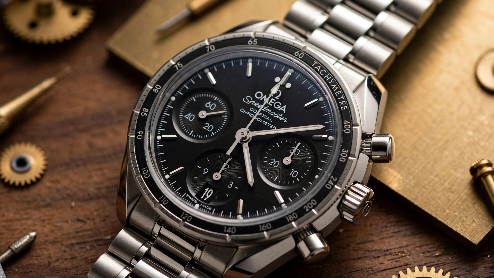

No More Ovals: How Omega Finally Made the 38mm Speedmaster a Real Moonwatch

Oval subdials are dead and long live round ones, because for nine years the Speedmaster 38mm wore its difference like a costume that finally wore out its welcome.
For nine years, the Speedmaster 38mm wore its difference like a costume. Introduced in 2017 as a more compact, more decorated, faintly more feminine alternative to the 42mm Moonwatch Professional, it featured elongated oval registers that existed partly to balance a movement whose subdial spacing was designed for a larger case, partly to create room for diamond settings on its bezel. You could spot a 38mm across a room not because it was smaller but because its subdials were wrong.
Omega fixed that this week when seven new references landed August 25, replacing the entire outgoing lineup with a coherent family that finally speaks the same visual language as the Moonwatch.
Same 38mm diameter, same 14.75mm thickness, same 44.96mm lug-to-lug, same 100-meter water resistance and box-shaped sapphire crystal and solid steel caseback stamped with the hippocampus medallion, but a completely different face, because round subdials return, the bezel insert widens and loses its notches, the tachymeter scale finally restores the Dot Over Ninety and Dot Diagonal to Seventy that obsessive Speedmaster collectors track like a typo in a first edition, dial text shrinks to just Omega logo plus Speedmaster, and the five-link Nixon-style bracelet becomes standard across all seven references with short rounded links and two-position comfort-release micro-adjustment offering 2.30mm of on-the-fly extension, and most importantly one reference finally drops the date.
The No-Date Reference That Finally Makes Sense for Small Wrists
Reference 324.30.38.50.01.002 brings steel construction, black varnished dial with matte finish, black aluminum bezel, white printed tachymeter, white painted hands identical to a Moonwatch, printed Super-LumiNova markers, no date at six o'clock and therefore no window, no disc, and no color mismatch in an aperture because there is no aperture, plus a bracelet with three brushed rows and two narrower polished rows, all powered by Caliber 3332 inside.
That last detail is why this one feels like a return to 1988 rather than just a refresh of 2017.
Back when Omega launched the Speedmaster Reduced, reference 3510.50, a 39mm automatic meant to be the smaller, more wearable Moonwatch, it succeeded because it understood its job. Smaller case, automatic winding, classic black dial, no fashion pretension. It ran from 1988 to 2010, spawned Schumacher editions in screaming yellows and blues and reds, and earned a cult following that still pays premiums for clean examples. When it died, Omega tried to replace it with something more jewelry-oriented. Oval subdials, two-piece bezels, diamond options front and center. Sales continued but the enthusiast connection thinned, so when Raynald Aeschlimann, Omega President and CEO, said the Speedmaster 38mm has always taken its cues from the Moonwatch and that this update takes that inspiration further, the corporate phrasing lands as accurate in this instance. The black no-date is the first 38mm since the Reduced that you could recommend to someone who wanted a Moonwatch and physically could not wear 42mm.
It will cost CHF 5,100 excluding taxes, EUR 6,400 including, $6,500 in the US. That makes it the cheapest entry to the Speedmaster family and roughly $1,600 less than a current Moonwatch sapphire sandwich, despite having an automatic column-wheel chronograph with Co-Axial escapement inside where the Moonwatch runs a manual 3861.
Why It Is Still 14.75mm
Internet comments have already converged on one number. Fourteen point seven five millimeters for a thirty-eight millimeter case is objectively thick. A Moonwatch sapphire sandwich measures 13.18mm tall at 42mm diameter. How does a smaller watch end up thicker than its larger sibling?
Blame lineage, because both Caliber 3330 and 3332 descend from a workhorse that has powered more chronographs than any other mechanism in Swiss history and still dictates dimensions today.
Both Caliber 3330 and 3332 descend from a workhorse that has powered more chronographs than any other mechanism in Swiss history. Valjoux 7753, the three-six-nine subdial variant of the Valjoux 7750, debuted in the 1970s as a cam-operated automatic chronograph with a rugged, thick architecture that prioritized reliability over elegance. In 2009, ETA reworked it into A08.L01 for Longines, part of the Valgranges family intended to fill larger cases. Column wheel replaced cam, diameter grew to 30mm, finishing improved, and Longines introduced it as L688.
Omega took L688 and Omega-ized it with Co-Axial escapement, free-sprung balance, Si14 silicon balance spring, 52-hour power reserve stretched from the standard 48, 31 jewels, COSC certification, and Geneva waves in arabesque where Longines keeps it simpler, but the fundamental stack did not change because the automatic winding rotor still sits atop a chronograph mechanism that already carries a column wheel and oscillating pinion coupling system plus a date mechanism on 3330 at six o'clock, so when you package that inside 38mm and insist that crown and pushers align on the same horizontal plane, a departure from the old Reduced which placed them on two levels to save height, thickness inevitably climbs. Hodinkee put it bluntly when noting everyone hoped this update would thin the case and it did not, because same movement means same dimensions, and what Omega did instead was embrace the subdial positioning as part of the charm rather than trying to hide it with ovals, a decision that reads as honest because round subdials pushed close to the dial edge look eager but still look like chronograph subdials rather than decorative ellipses, and although a flat dial not stepped like the Moonwatch betrays the smaller diameter, the overall composition holds together better than the 2017 generation precisely because Omega stopped apologizing for movement geometry.
Future fix would require a completely new caliber, something like a scaled 9900-series architecture with vertical clutch, twin barrels, Master Chronometer certification, and perhaps a 13mm target, but nothing like that exists in Omega's current 38mm toolbox and developing one for a niche size would cost tens of millions, so for now 14.75mm remains the price of automatic convenience in a Moonwatch costume.
What Lives Inside: 3330 and 3332
Six of seven references run Caliber 3330. Date at six, 52-hour power reserve, 28,800 vibrations per hour, 4Hz, silicon hairspring that makes the watch effectively immune to everyday magnetic fields from phones and laptops, Co-Axial escapement that George Daniels designed to reduce sliding friction between escape wheel teeth and pallet stones.
Coupling uses oscillating pinion rather than vertical clutch, so when you press the pusher the pinion swings into engagement between the fourth wheel and chronograph runner and the seconds hand starts, while the column wheel controls the sequence so start feels crisp with no wobble, which is the same principle Omega uses in its higher-end 9908 Chronoscope but executed with ETA-derived base architecture that has been in continuous production for fifty years in various forms.
Neither caliber is Master Chronometer certified, a distinction that matters to Omega marketing which has made METAS certification and 15,000 gauss resistance a core identity for most modern Speedmasters, and here the watch is COSC only, meaning chronometer not Superlative Chronometer and not Master Chronometer, and the reason for skipping METAS is likely economics. METAS requires each watch, not just the movement, to pass eight tests over ten days including magnetic resistance, power reserve verification, and water resistance. For a CHF 5,100 entry watch built on a third-party-derived base, that added cost erodes margin without adding much real-world benefit because the silicon hairspring already handles the most relevant failure mode, magnetism.
Caliber 3332 in the black no-date deletes the date mechanism, saves a fraction of a millimeter in stack height, though Omega does not publish separate thickness, and cleans the dial. Collectors who remember the Speedmaster Reduced will recognize the appeal instantly. No-date chronographs photograph better, wear more symmetrically, and avoid the eternal question of why a Moonwatch has a date window at all.
Seven Faces
Beyond the no-date hero, six date references fill out the collection with distinct personalities that range from restrained steel to gold-accented luxury.
Steel with silvery opaline PVD dial, reference 324.30.38.50.02.003, pairs a warm grey aluminum bezel insert with Sedna Gold PVD hands and baton indexes and brown chronograph hands in the subdials, a combination that reads as more urbane than sporty at CHF 5,200 or $6,700 which Monochrome fairly calls slightly dressier. Steel with white lacquered dial and blue ceramic bezel, reference 324.30.38.50.04.001, carries a white enamel tachymeter scale on the ceramic, blue CVD-coated hands and indexes, and blue date numerals that match the hands, making it the most colorful of the steel trio that recalls both the CK2998 limited edition of 2016 and the Silver Snoopy Award 50th Anniversary and the Milano Cortina 2026 edition that previewed this design direction in late 2025 at CHF 5,500 or $7,100.
Two bi-color references add solid gold where steel normally lives, with reference 324.20.38.50.02.001 combining stainless steel middle case with polished 18K Moonshine Gold bezel, crown, pushers, and inner bracelet links, where Moonshine Gold is Omega's proprietary 18K yellow gold alloy introduced in 2019 that is paler than traditional yellow gold with palladium added to slow tarnish and stabilize color over decades of UV and skin contact, paired with green aluminum bezel with yellow gold tach scale and silvery opaline PVD dial, while reference 324.20.38.50.02.002 revisits the Cappuccino name Omega has used for this palette since the previous generation with steel case, polished 18K Sedna Gold bezel with brown aluminum insert, Sedna Gold crown and pushers and inner links, ivory dial, and brown PVD-coated subdials, both bi-color at CHF 9,100 or $11,700. Two diamond-set references sit at the top, both stainless steel cases with 52 diamonds in the bezel totaling 1.53 carats, where reference 324.15.38.50.03.001 pairs ice blue PVD-coated dial with diamond bezel and rhodium-plated hands and baton indexes with white Super-LumiNova and reference 324.15.38.50.05.001 uses white mother-of-pearl dial, priced at CHF 9,600 and CHF 10,200 respectively, or $12,300 and $13,100 in US pricing.
Across all seven, the bracelet treatment varies subtly. Center links polished or brushed depending on reference, outer links brushed, folding clasp with comfort-release, five links total, Nixon-style in Omega marketing, meaning short rounded links for vintage flex and more articulation than the previous three-link 38mm bracelet.
Engineering Judgment
Speedmaster 38mm has always been a compromise where smaller case helps wrists that cannot carry 42mm but automatic chronograph means thicker case and less refined dial proportions than a hand-wound Moonwatch, and oval subdials were an attempt to hide one compromise that created another watch that did not look like a Speedmaster. This generation drops the disguise with round subdials, Moonwatch bezel language, no-date option, and a bracelet that actually references the current Moonwatch rather than a fashion bracelet from 2017, while thickness remains, movement lineage remains, and COSC-not-METAS remains as real limitations that Omega does not hide in the spec sheet. What changed is coherence, because for the first time since the Reduced ended production in 2010 there is a 38mm Speedmaster you could buy because you love Speedmasters and have small wrists, not because you wanted a diamond-set fashion chronograph that happened to say Speedmaster on the dial. Seven references form a permanent collection that is not limited, starting at CHF 5,100 and available now, where the no-date black dial will be the one people remember, a watch that should have existed years ago and now proves that better late beats still oval.
Sources
- Revolution Watch, "Omega brings the Speedmaster 38mm closer to its Moonwatch roots," August 25, 2026, detailing seven new references, round subdials replacing oval, Dot Over Ninety restoration, broader bezel insert without notches, pared-back dial text, applied logo, five-link Moonwatch-style bracelet with micro-adjustment, Caliber 3330 and 3332 specifications, column wheel with oscillating pinion, ETA A08.L01 Valgranges family, Longines L688 development 2009, Valjoux 7753 descent, Co-Axial escapement, silicon hairspring, 52-hour power reserve, 38mm x 14.75mm x 44.96mm dimensions, 100m water resistance, CHF pricing from 5,100 to 10,200.
- Hodinkee, "Introducing: A New Generation Of The Omega Speedmaster 38mm," August 25, 2026, covering no-date reference 324.30.38.50.01.002 as most Moonwatch-like, black dial steel $6,500, silver dial $6,700, white dial blue ceramic $7,100, bi-metal $11,700, diamond ice blue $12,300, mother-of-pearl $13,100, thickness 14.75mm retained due to Caliber 3330 reuse, lug-to-lug 44.96mm, five-link bracelet with comfort release 2.3mm, oval subdials removed, internet feedback on thickness.
- Monochrome Watches, "First Look: Omega Refreshes the Speedmaster 38mm Collection," August 25, 2026, providing history from Speedmaster Reduced 39mm 1988-2010 ETA plus Dubois-Depraz module crown pushers two levels, to 2010 38mm Caliber 3304 based on Valjoux 7753 date, to 2017 Caliber 3330 oval subdials two-piece bezel diamond focus, to Milano Cortina 2026 preview, Caliber 3332 no-date details, box-shaped sapphire vs domed Hesalite FOiS, asymmetrical case with lyre lugs, solid caseback hippocampus, bracelet Nixon-style 5-link brushed with polished accents, bi-color Moonshine Gold green aluminum bezel, Sedna Gold Cappuccino brown PVD subdials ivory dial, diamond bezel 52 diamonds 1.53 carats ice blue PVD and mother-of-pearl, EUR pricing 6,400 to 12,900, technical specifications 30mm movement diameter, 31 jewels, free-sprung balance.
- Fratello Watches, "Hands-On: The New Omega Speedmaster Milano Cortina 2026," November 2025, documenting Caliber 3330 automatic chronograph column wheel 28,800 vph 4Hz 52-hour 31 jewels Co-Axial silicon balance COSC, Milano Cortina 38mm white varnished lacquered dial blue indexes Super-LumiNova green emission concentric-grained subdials, blue ceramic bezel, Nixon bracelet 18/15mm polished center links push-button folding clasp easy adjustment 2mm, priced EUR 6,700 CHF 5,300 US $6,800.
- Omega Watches, Speedmaster 38mm collection product pages, confirming reference numbers 324.30.38.50.01.002 black no-date, 324.30.38.50.04.001 white lacquer blue ceramic, 324.30.38.50.02.003 silvery opaline grey aluminum Sedna Gold PVD, 324.20.38.50.02.001 steel Moonshine Gold green aluminum, 324.20.38.50.02.002 steel Sedna Gold Cappuccino brown, 324.15.38.50.03.001 ice blue diamond bezel, 324.15.38.50.05.001 mother-of-pearl diamond bezel, permanent collection status, Moonshine Gold proprietary 18K alloy 2019 palladium addition, Sedna Gold proprietary alloy.
- Raynald Aeschlimann quoted in Monochrome and Revolution coverage, August 25, 2026: "The Speedmaster 38mm has always taken its cues from the Moonwatch (...) With this latest update, we've taken the Moonwatch inspiration even further."